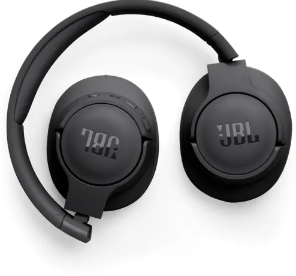
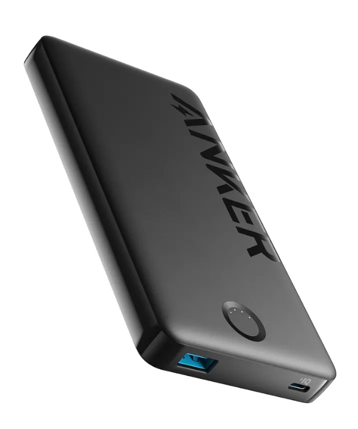
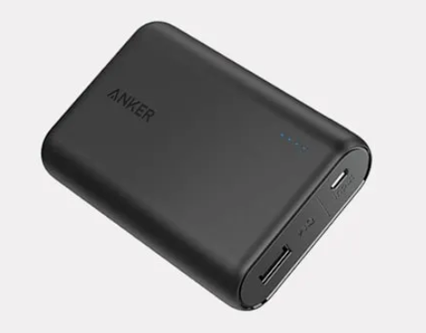
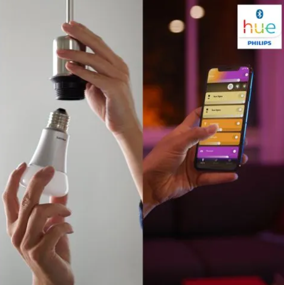
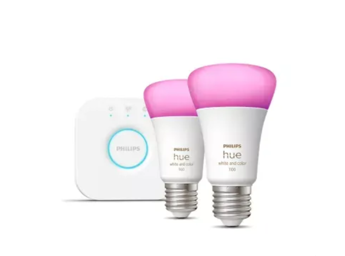

Tu página de chollos de confianza

Los Auriculares inalámbricos JBL Tune 720bt son la opción perfecta para los amantes de la música que buscan portabilidad y calidad de sonido superior sin complicaciones. Diseñados por JBL, una marca icónica en el mundo del audio, estos auriculares combinan un diseño ergonómico con tecnología de vanguardia que se adapta a tu estilo de vida activo. Imagina poder disfrutar de tus playlists favoritas durante horas sin interrupciones, ya sea en el gimnasio, en el transporte público o en una llamada de trabajo.
Entre sus ventajas principales destaca la cancelación activa de ruido (ANC), que te permite sumergirte en un mundo de sonido puro al bloquear distracciones externas como el ruido del tráfico o conversaciones ajenas. Además, su batería de larga duración asegura que no te quedes sin música en el momento menos oportuno, y la conectividad Bluetooth 5.0 garantiza una conexión estable y de baja latencia. La libertad de movimiento es lo que hace que estos auriculares sean imprescindibles, según reseñas de usuarios satisfechos.
Las características técnicas de estos auriculares los convierten en un chollo irresistible en Chollotrón. Aquí va una lista de sus especificaciones clave:
Con un precio accesible y una garantía de dos años, estos auriculares no solo elevan tu experiencia auditiva, sino que también representan una inversión inteligente en comodidad diaria.
Para más detalles, visita la página oficial del fabricante JBL.
Video de demostración de los auriculares JBL Tune 720BT en acción. Para más detalles, mira el original en YouTube.
Video de demostración de los auriculares JBL Tune 720BT en acción.


El Power bank Anker PowerCore 10000 es el compañero ideal para mantener tus dispositivos cargados en cualquier momento, sin importar dónde estés. Fabricado por Anker, líder en soluciones de carga portátiles, este power bank destaca por su diseño ultracompacto que cabe en cualquier bolsillo o bolso. Perfecto para viajes, trabajo remoto o días intensos de uso de smartphone, te ofrece la tranquilidad de una batería extra siempre lista.
Una de las ventajas más notables es su capacidad de carga rápida, que permite recargar tu teléfono del
0% al 50% en apenas 30 minutos, gracias a la tecnología PowerIQ. Además, su construcción ligera de solo 180
gramos lo hace fácil de llevar, y la protección contra sobrecargas asegura la seguridad de tus gadgets. Es
como tener una estación de energía en miniatura
, afirman expertos en reseñas de tecnología.
Las características técnicas de este power bank lo convierten en un chollo irresistible en Chollotrón. Aquí una lista de sus especificaciones esenciales:
Con una garantía de 18 meses y un precio que lo convierte en un verdadero chollo en Chollotrón, este power bank no solo resuelve tus problemas de batería, sino que eleva tu movilidad diaria a otro nivel.
Para más detalles, visita la página oficial del fabricante Anker.
Video de demostración de Power bank Anker PowerCore 10000 en acción. Para más detalles, mira el original en YouTube.
Video de unboxing y prueba de carga del power bank Anker PowerCore 10000.


La Bombilla inteligente Philips Hue White transforma tu hogar en un espacio inteligente y eficiente, permitiendo controlar la iluminación con solo un toque en tu app o voz. Desarrollada por Philips, pionera en iluminación conectada, esta bombilla E27 es compatible con asistentes como Alexa y Google Home, haciendo que la domótica sea accesible para todos. Ideal para salones, dormitorios o oficinas, ofrece una luz blanca cálida que se adapta a tus necesidades diarias.
Entre sus ventajas clave se encuentra el ahorro energético de hasta un 80% comparado con bombillas
tradicionales, lo que reduce tu factura de luz sin sacrificar la calidad lumínica. Su instalación es
plug-and-play: solo atorníllala y conéctala al hub Hue para empezar a programar rutinas, como apagar luces al
salir de casa. La comodidad de la inteligencia artificial en algo tan básico como una bombilla
, destacan
usuarios en foros de smart home.
Las características técnicas de esta bombilla la posicionan como una opción premium a precio de ganga. Aquí una lista de sus especificaciones esenciales:
En Chollotrón, esta bombilla no solo ilumina tu espacio, sino que ilumina el camino hacia un hogar más moderno y sostenible.
Para más detalles, visita la página oficial del fabricante Philips Hue.
Video de demostración de Philips Hue White en funcionamiento. Para más detalles, mira el original en YouTube.
Video de instalación y configuración de la bombilla inteligente Philips Hue White.
Ir a YT